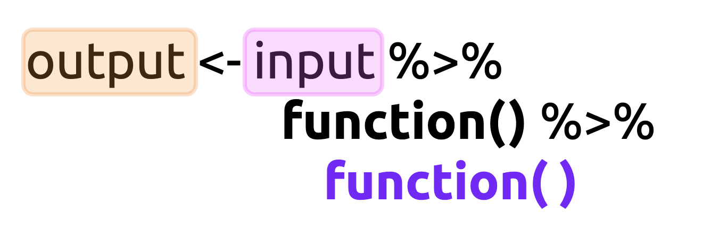

Introduction to Data Visualization with ggplot2
0.1 Objectives
This document outlines and introduction to data visualization with ggplot2. The objectives for this section are:
Explain why there is as Grammar of Graphics is and what problem it solves
Define the terms
geomandaestheticCompare and contrast function calls with and without the pipe operator (
%>%)Create a visualization using
ggplot2’s quickplot function (qplot())Build a graph one layer at a time using the
ggplot2template
0.2 Materials
The slides for this presentation are here
There is also an accompanying RStudio.Cloud project
0.3 Previous lessons
You might want to revisit the dplyr and tidyr lessons, or check out the Data Transformation and Tidy Data chapters of R for Data Science.
0.4 Load the packages
The main packages we’re going to use are dplyr, tidyr, and ggplot2. These are all part of the tidyverse, so we’ll import this package below:
install.packages("tidyverse")
library(tidyverse)0.5 Import data
We will begin by importing the data from the wrangling section. These data come from a wikipedia table on the deployment of COVID-19 vaccinations. The code below will scrape the html table and store the results in COVID19VaxDistByLoc.
0.5.1 Scrape wikipedia
- We load the
tidyverse,rvest, andxml2packages withlibrary()
- The url for the wikipedia page is read into R with
xml2::read_html()and stored inwiki_htmlas a list containingxml_documentandxml_node
- The
rvest::html_nodes()function looks for a CSS"table"inwiki_htmland stores these inwiki_html_tables
- We use the bracket subsetting (
[]) andbase::grep()to find tables with the word"distribution"in them and store these inrelevant_tables - Now we can use the
rvest::html_table()function to ‘harvest’ the tables stored in the first position ofrelevant_tablesand set thefillargument toTRUE([[1]]), and store the output inCOVID19VaxDistByLoc. - The
COVID19VaxDistByLocis a rectangulardata.frameobject, but we only want the first three columns ([ , 1:3]), and we want to rename these"location","n_vaccinated", and"perc_of_pop".
# packages -----------------------------------------------------------
library(tidyverse)
library(rvest)
library(xml2)
# scrape wikipedia table ---------------------------------------------
# Read html from url
wiki_html <- xml2::read_html("https://en.wikipedia.org/wiki/COVID-19_vaccine")
# extract html nodes
wiki_html_tables <- wiki_html %>% rvest::html_nodes(css = "table")
# identify relevant html table with 'distribution' in the title
relevant_tables <- wiki_html_tables[grep("distribution", wiki_html_tables)]
# convert table to data.frame
COVID19VaxDistByLoc <- rvest::html_table(relevant_tables[[1]],
fill = TRUE)
# assign names to first three columns
COVID19VaxDistByLoc <- COVID19VaxDistByLoc[ , 1:3] %>%
magrittr::set_names(x = ., value = c("location", "n_vaccinated",
"perc_of_pop"))
glimpse(COVID19VaxDistByLoc)## Rows: 196
## Columns: 3
## $ location <chr> "World[e]", "United States", "China[f…
## $ n_vaccinated <chr> "562,324,298", "140,969,663", "229,48…
## $ perc_of_pop <chr> "7.2%", "42.1%", "--", "8.7%", "21.7%…0.5.2 Date-stamp and export
This is a good time to export these data into the data/raw folder (in case the numbers change the next time we scrape the table).
readr::write_csv(x = COVID19VaxDistByLoc,
file = paste0("data/raw/",
base::noquote(lubridate::today()),
"-COVID19VaxDistByLoc.csv"))
# verify
fs::dir_tree("data/raw/", regexp = "COVID19")## data/raw/
## ├── 2021-04-15-COVID19VaxDistByLoc.csv
## ├── 2021-04-17-COVID19VaxDistByLoc.csv
## ├── 2021-04-21-COVID19VaxDistByLoc.csv
## ├── 2021-04-22-COVID19VaxDistByLoc.csv
## ├── 2021-04-23-COVID19VaxDistByLoc.csv
## ├── 2021-04-26-COVID19VaxDistByLoc.csv
## └── 2021-04-27-COVID19VaxDistByLoc.csvWe can see these data have been downloaded on multiple days (starting on 2021-04-15)
0.6 Look at the data
“A problem well-defined is a problem half solved.” ― John Dewey
Before we start any data wrangling, we need to look at the data in it’s ‘natural state.’ Viewing the data gives us an opportunity to quantify the catastrophe we’re dealing with, and let’s us plan a path forward.
There are multiple functions for looking at your data in R. I like to start with the utils::head() and utils::tail() functions see the ‘top’ and ‘bottom’ a dataset.
utils::head() shows us the top six rows of COVID19VaxDistByLoc:
utils::head(COVID19VaxDistByLoc)We can change the number of rows head() or tail() returns by supplying a number to the n argument.
utils::head(COVID19VaxDistByLoc, n = 10)0.6.1 exercise
Use the utils::tail() function below to view the bottom 10 rows of COVID19VaxDistByLoc.
utils::tail(COVID19VaxDistByLoc, n = __)0.6.2 solution
utils::tail(COVID19VaxDistByLoc, n = 10)We’ve covered other functions for viewing your data (dplyr::glimpse(), utils::str(), and View()), and I recommend using any combination of them to get a good understanding of what you’re dealing with. We can already see a few of the columns need to be addressed before we can start visualizing, so let’s write up a plan for wrangling these variables:
- The last row in
COVID19VaxDistByLochas some metadata (data about data) that needs to be extracted before we can visualize. - We need to remove the alphabetic identifier for each country
location(i.e.,World[d]andChina[e]).
- The number vaccinated variable (
n_vaccinated) has commas (,) and needs to be converted to a number.
- The percent of population variable (
perc_of_pop) has symbols (decimals, percent symbols (%), and missing values (--)), which is making R treat it as a character, so these will have to be removed.
0.7 Step 1: Remove metadata
We can use the dplyr::filter function to remove the last row with the Sources. We’re going to combine filter() with the stringr::str_detect() function so we can identify the row with the word ‘Sources’. The stringr package is part of the tidyverse and comes with some excellent functions for manipulating strings (characters).
stringr::str_detect() takes a string argument, which will be our location variable in COVID19VaxDistByLoc, and a pattern argument, which we will specify as "Source".
stringr::str_detect(string = COVID19VaxDistByLoc$location,
pattern = "Source")## [1] FALSE FALSE FALSE FALSE FALSE FALSE FALSE FALSE FALSE
## [10] FALSE FALSE FALSE FALSE FALSE FALSE FALSE FALSE FALSE
## [19] FALSE FALSE FALSE FALSE FALSE FALSE FALSE FALSE FALSE
## [28] FALSE FALSE FALSE FALSE FALSE FALSE FALSE FALSE FALSE
## [37] FALSE FALSE FALSE FALSE FALSE FALSE FALSE FALSE FALSE
## [46] FALSE FALSE FALSE FALSE FALSE FALSE FALSE FALSE FALSE
## [55] FALSE FALSE FALSE FALSE FALSE FALSE FALSE FALSE FALSE
## [64] FALSE FALSE FALSE FALSE FALSE FALSE FALSE FALSE FALSE
## [73] FALSE FALSE FALSE FALSE FALSE FALSE FALSE FALSE FALSE
## [82] FALSE FALSE FALSE FALSE FALSE FALSE FALSE FALSE FALSE
## [91] FALSE FALSE FALSE FALSE FALSE FALSE FALSE FALSE FALSE
## [100] FALSE FALSE FALSE FALSE FALSE FALSE FALSE FALSE FALSE
## [109] FALSE FALSE FALSE FALSE FALSE FALSE FALSE FALSE FALSE
## [118] FALSE FALSE FALSE FALSE FALSE FALSE FALSE FALSE FALSE
## [127] FALSE FALSE FALSE FALSE FALSE FALSE FALSE FALSE FALSE
## [136] FALSE FALSE FALSE FALSE FALSE FALSE FALSE FALSE FALSE
## [145] FALSE FALSE FALSE FALSE FALSE FALSE FALSE FALSE FALSE
## [154] FALSE FALSE FALSE FALSE FALSE FALSE FALSE FALSE FALSE
## [163] FALSE FALSE FALSE FALSE FALSE FALSE FALSE FALSE FALSE
## [172] FALSE FALSE FALSE FALSE FALSE FALSE FALSE FALSE FALSE
## [181] FALSE FALSE FALSE FALSE FALSE FALSE FALSE FALSE FALSE
## [190] FALSE FALSE FALSE FALSE FALSE FALSE TRUEAs we can see, only the last row is identified as having the "Source" pattern. But what if we want the opposite logical values designated? Fortunately, str_detect() has a negate argument we can set to TRUE.
stringr::str_detect(string = COVID19VaxDistByLoc$location,
pattern = "Source", negate = TRUE)## [1] TRUE TRUE TRUE TRUE TRUE TRUE TRUE TRUE TRUE
## [10] TRUE TRUE TRUE TRUE TRUE TRUE TRUE TRUE TRUE
## [19] TRUE TRUE TRUE TRUE TRUE TRUE TRUE TRUE TRUE
## [28] TRUE TRUE TRUE TRUE TRUE TRUE TRUE TRUE TRUE
## [37] TRUE TRUE TRUE TRUE TRUE TRUE TRUE TRUE TRUE
## [46] TRUE TRUE TRUE TRUE TRUE TRUE TRUE TRUE TRUE
## [55] TRUE TRUE TRUE TRUE TRUE TRUE TRUE TRUE TRUE
## [64] TRUE TRUE TRUE TRUE TRUE TRUE TRUE TRUE TRUE
## [73] TRUE TRUE TRUE TRUE TRUE TRUE TRUE TRUE TRUE
## [82] TRUE TRUE TRUE TRUE TRUE TRUE TRUE TRUE TRUE
## [91] TRUE TRUE TRUE TRUE TRUE TRUE TRUE TRUE TRUE
## [100] TRUE TRUE TRUE TRUE TRUE TRUE TRUE TRUE TRUE
## [109] TRUE TRUE TRUE TRUE TRUE TRUE TRUE TRUE TRUE
## [118] TRUE TRUE TRUE TRUE TRUE TRUE TRUE TRUE TRUE
## [127] TRUE TRUE TRUE TRUE TRUE TRUE TRUE TRUE TRUE
## [136] TRUE TRUE TRUE TRUE TRUE TRUE TRUE TRUE TRUE
## [145] TRUE TRUE TRUE TRUE TRUE TRUE TRUE TRUE TRUE
## [154] TRUE TRUE TRUE TRUE TRUE TRUE TRUE TRUE TRUE
## [163] TRUE TRUE TRUE TRUE TRUE TRUE TRUE TRUE TRUE
## [172] TRUE TRUE TRUE TRUE TRUE TRUE TRUE TRUE TRUE
## [181] TRUE TRUE TRUE TRUE TRUE TRUE TRUE TRUE TRUE
## [190] TRUE TRUE TRUE TRUE TRUE TRUE FALSE0.7.1 exercise
Use str_detect() and filter() to remove the metadata row, and assign the output to WikiCovid. Change the negate argument to TRUE for these data.
WikiCovid <- COVID19VaxDistByLoc %>%
dplyr::filter(str_detect(string = COVID19VaxDistByLoc$location,
pattern = "_____", negate = ____))
glimpse(WikiCovid)0.7.2 solution
See solution below.
WikiCovid <- COVID19VaxDistByLoc %>%
dplyr::filter(str_detect(string = COVID19VaxDistByLoc$location,
pattern = "Source", negate = TRUE))
glimpse(WikiCovid)## Rows: 195
## Columns: 3
## $ location <chr> "World[e]", "United States", "China[f…
## $ n_vaccinated <chr> "562,324,298", "140,969,663", "229,48…
## $ perc_of_pop <chr> "7.2%", "42.1%", "--", "8.7%", "21.7%…0.7.3 exercise
Now use str_detect() with filter() to extract the metadata row with the "Source" pattern, and assign the output to WikiCovidSource. Don’t change the negate argument this time.
WikiCovidSource <- COVID19VaxDistByLoc %>%
dplyr::filter(str_detect(string = __________________________,
pattern = "_______"))0.7.4 solution
See solution below.
WikiCovidSource <- COVID19VaxDistByLoc %>%
dplyr::filter(str_detect(string = COVID19VaxDistByLoc$location,
pattern = "Source"))
glimpse(WikiCovidSource)## Rows: 1
## Columns: 3
## $ location <chr> "Sources\nList of sources by country.…
## $ n_vaccinated <chr> "Sources\nList of sources by country.…
## $ perc_of_pop <chr> "Sources\nList of sources by country.…We changed the name of the COVID19VaxDistByLoc dataset to WikiCovid so we can differentiate the changed data from the raw data. This is a good practice because you might need to revert back to the original dataset along the way (or view it for comparison).
0.8 Step 2: Remove string characters
For the next step in wrangling the location variable, we will want to identify all the letters in brackets using stringr::str_view_all(). Below is an example of how it works:
str_view_all(string = WikiCovid$location, pattern = "\\[[^\\[\\]]+\\]", match = TRUE)str_view_all() shows us all the locations with a bracket [] + letter/number indicator. Don’t worry if you don’t know what the regular expression pattern ("\\[[^\\[\\]]+\\]") is doing. We will cover regular expressions in a later section (if you can’t wait, check out the Strings chapter of R for Data Science). The main takeaway here is that we need to provide a string (i.e. the variable name), and a pattern we wish to view.
0.8.1 exercise
Now that we’ve successfully identified the regular expression pattern for matching all the strings we want to remove, we can use dplyr::mutate() and stringr::str_remove_all() to remove these numbers and letters from the location column:
- copy and paste the
patternfrom thestringr::str_view_all()function above into thepatternargument forstringr::str_remove_all()below:
WikiCovid %>%
mutate(
# remove bracket indicators ([])
location = stringr::str_remove_all(string = location,
pattern = "_______________"))0.8.2 solution
Check your solution below:
WikiCovid %>%
mutate(
# remove bracket indicators ([])
location = stringr::str_remove_all(string = location,
pattern = "\\[[^\\[\\]]+\\]"))0.9 Step 3: Removing commas
The next variable we want to address is the number vaccinated, or n_vaccinated. These numbers were formatted with commas in the Wikipedia table (which is common), so R treated them like a character variable. We will use the readr::parse_number() to convert n_vaccinated to a numerical variable.
0.9.1 exercise
Enter the n_vaccinated variable into the readr::parse_number() function below:
WikiCovid %>%
mutate(
# remove bracket indicators ([])
location = stringr::str_remove_all(string = location,
pattern = "\\[[^\\[\\]]+\\]"),
n_vaccinated = readr::parse_number(x = ____________))0.9.2 solution
See solution below:
WikiCovid %>%
mutate(
# remove bracket indicators ([])
location = stringr::str_remove_all(string = location,
pattern = "\\[[^\\[\\]]+\\]"),
n_vaccinated = readr::parse_number(n_vaccinated))Now the data are beginning to look wrangled! We only have one more variable to go!
0.10 Step 4: Remove decimals and symbols
The perc_of_pop variable poses a few challenges, starting with the % symbol. We can remove this with stringr::str_remove_all() or the readr::parse_number() function. But we can also see the missing values are represented with a -- symbol. We should see how many missing values there are in this dataset using stringr::str_view_all().
str_view_all(string = WikiCovid$perc_of_pop, pattern = "--", match = TRUE)This is not an insignificant amount! To get an exact count, we can combine sum() and str_detect():
sum(str_detect(WikiCovid$perc_of_pop, pattern = "--"))## [1] 14Now we need to decide how to deal with these missing values and the percentage symbols. We will test both stringr::str_remove_all() and readr::parse_number() below to see which one is best:
stringr::str_remove_all(string = head(WikiCovid$perc_of_pop), pattern = "%")## [1] "7.2" "42.1" "--" "8.7" "21.7" "49.7"stringr::str_remove_all gives us no problems, and returns the original symbol for the missing China value (--). What about readr::parse_number()?
readr::parse_number(x = head(WikiCovid$perc_of_pop))## [1] 7.2 42.1 NA 8.7 21.7 49.7
## attr(,"problems")
## # A tibble: 1 x 4
## row col expected actual
## <int> <int> <chr> <chr>
## 1 3 NA a number --readr::parse_number() tells us there was a parsing failure, and this value has been changed to NA. This is preferred because 1) it requires fewer steps, and 2) it will handle other missing values in the future.
0.10.1 exercise
Add the code for removing the percentage symbols from perc_of_pop with readr::parse_number() to the mutate() function below:
WikiCovid <- WikiCovid %>%
mutate(
# remove bracket indicators ([])
location = stringr::str_remove_all(string = location,
pattern = "\\[[^\\[\\]]+\\]"),
n_vaccinated = readr::parse_number(n_vaccinated),
# add perc_of_pop
perc_of_pop = readr::parse_number(_____________)
)0.10.2 solution
See solution below:
WikiCovid <- WikiCovid %>%
mutate(
# remove bracket indicators ([])
location = stringr::str_remove_all(string = location,
pattern = "\\[[^\\[\\]]+\\]"),
n_vaccinated = readr::parse_number(n_vaccinated),
perc_of_pop = readr::parse_number(perc_of_pop)
)We can see the message about the parsing failures (which we expected). Let’s view our wrangled dataset below:
WikiCovid0.11 Explore your data
R has thousands of custom built packages for visualizing data. One of the packages we’ll be using a lot in this course is skimr, which provides a “A frictionless, pipeable approach to dealing with summary statistics.”
What is ‘pipeable’?
The pipe (%>%) from the magrittr package is what’s referred to as syntactic sugar (yes, that’s really a term) because it’s,
“syntax within a programming language that is designed to make things easier to read or to express”
0.11.1 How pipes work
R is a functional programming language. In standard math notation, the common way to write a function is f(x) or y = f(x), which is read as “f of x” or “y equals f of x”.
Pipes restructure the function syntax, so this:
Becomes this:

0.11.2 Pipelines
As you can imagine, writing code like this can get complicated if we wanted to use multiple functions (as we typically do), Without the pipe, we have to write these as nested functions (i.e. h(f(x))).

With the pipe, we can rewrite this code to the following:

Using the pipe makes code easier to 1) think about, 2) write, and 3) read.
0.11.3 exercise
Pipe the WikiCovid to the skimr::skim() function:
WikiCovid %>% 0.11.4 solution
See the solution below:
WikiCovid %>% skimr::skim()| Name | Piped data |
| Number of rows | 195 |
| Number of columns | 3 |
| _______________________ | |
| Column type frequency: | |
| character | 1 |
| numeric | 2 |
| ________________________ | |
| Group variables | None |
Variable type: character
| skim_variable | n_missing | complete_rate | min | max | empty | n_unique | whitespace |
|---|---|---|---|---|---|---|---|
| location | 0 | 1 | 2 | 32 | 0 | 195 | 0 |
Variable type: numeric
| skim_variable | n_missing | complete_rate | mean | sd | p0 | p25 | p50 | p75 | p100 | hist |
|---|---|---|---|---|---|---|---|---|---|---|
| n_vaccinated | 0 | 1.00 | 7544246.38 | 45715084.23 | 22 | 33933.0 | 244000.0 | 1187642.5 | 562324298.0 | ▇▁▁▁▁ |
| perc_of_pop | 14 | 0.93 | 14.92 | 18.51 | 0 | 1.4 | 7.2 | 22.3 | 106.8 | ▇▂▁▁▁ |
As we can see, the skim() output gives us a lot of descriptive information about the variables (columns) in WikiCovid. A brief summary of these statistics is provided below:
Character variables We can see none of the data in location are missing (n_missing and complete_rate). Skimr::skim() also shows us the min, max, empty, n_unique, and whitespace.
Numeric variables: Location statistics
- the mean (or average) gives us the expected value for each variable
- the median (as p50) or the ‘center’ value for each variable. Half of the values are above, and half are below.
Numeric variables: Spread statistics
- the lowest value for each variable, or minimum (as p0)
- the highest value for each variable, or maximum (as p100)
Together, these two values can give us the range, which is the difference between the maximum and minimum values
Do you notice anything strange?
Now we are ready to start visualizing!
0.12 Intro to ggplot2
ggplot2 is part of the tidyverse, which is a collection of opinionated packages from RStudio that ‘you’re likely to use in everyday data analyses.’. The ggplot2 package is an implementation of the “Grammar of Graphics” by Leland Wilkinson. This text outlines a foundation for understanding the components of just about every graph or figure we’ve encountered (and some we haven’t). ggplot2 extends these concepts into a powerful grammar for developing data visualizations in R.
0.12.1 A ‘grammar’ for data visualization?
Wilhelm von Humboldt has described a language as a system for “making infinite use of finite means.” Grammar is the way we convert the thoughts in our heads into discrete concepts (i.e. words), and then we apply a set of rules (or syntax) to create and display comprehensible statements (for humans or computers). In this sense, ggplot2 gives us an ability to communicate the complexities of any data visualization in the same way that any specialized vocabulary allows us to precisely and unambiguously define ideas.
Within the R language, ggplot2 provides the grammar (or set of rules) we can learn to develop a rich vocabulary for data visualizations. Knowing how to use ggplot2’s grammar also gives us an excellent mental model for thinking about individual graphical elements.
0.13 Terms and definitions: geoms and aesthetics
A geom (or geometric object) is the shape or ‘thing’ we see on a graph or plot (this includes dots or points, lines, bars, etc.). geoms are created using aesthetic mappings, which are visual properties of the shape on the plot or graph (i.e. the color of the point, the size of the lines, the position or shape of the bars, etc.).
So every graph or plot has a geom, and that geom will also have some visual properties called aesthetics.
0.13.1 exercise
Use the pipe syntax below to apply the ggplot2::ggplot() and ggplot2::aes() functions to the WikiCovid data.
WikiCovid %>%
ggplot2::_______(ggplot2::___())0.13.2 solution
See the solution below:
WikiCovid %>%
ggplot2::ggplot(ggplot2::aes())
When we combine a dataset with the ggplot2::ggplot() and ggplot2::aes() functions, we get a blank canvas. This is the base layer for ggplot2 graphs. Next we will see what happens when we ‘map’ variables to their respective positions (x and y).
0.14 Build the labels first!
I suggest building labels first when making a figure or graph, because it forces us to think about what we should expect to see. For example, if we want to see location on the y and perc_of_pop on the x, we can create these with a title using the ggplot2::labs() function below.
Note the use of the paste0() function to ensure the date matches the same day we scraped the data.
labs_location_vaccinated <- ggplot2::labs(
title = "COVID-19 vaccine distribution by location",
subtitle = paste0("Data as of ", as.character(Sys.Date())),
caption = "https://en.wikipedia.org/wiki/Deployment_of_COVID-19_vaccines#Distribution",
x = "Percent of population vaccinated",
y = "Location")0.14.1 exercise
Use the labels to guide you in filling in the aes() function below:
WikiCovid %>%
ggplot2::ggplot(ggplot2::aes(x = _____________, y = _____________)) +
labs_location_vaccinated0.14.2 solution
See the solution below:
WikiCovid %>%
ggplot2::ggplot(ggplot2::aes(x = perc_of_pop, y = location)) +
labs_location_vaccinated